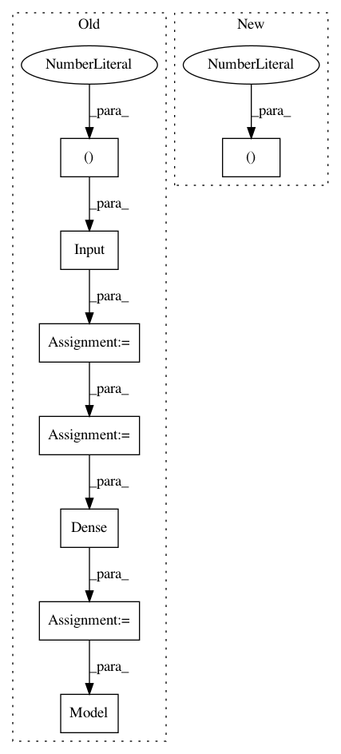

8ed9daf4707d86f8fe754045ae819b0961bdd290,studio/helloworld/train_mnist_keras.py,,,#,12
Before Change
from studio import fs_tracker
// this placeholder will contain our input digits, as flat vectors
img = Input((784,))
// fully-connected layer with 128 units and ReLU activation
x = Dense(128, activation="relu")(img)
x = Dense(128, activation="relu")(x)
// output layer with 10 units and a softmax activation
preds = Dense(10, activation="softmax")(x)
model = Model(img, preds)
lr = 0.01
print("learning rate = {}".format(lr))
model.compile(loss="categorical_crossentropy", optimizer=optimizers.SGD(lr=lr))
After Change
//model.add(Conv2D(64, 3, activation="relu"))
//model.add(Flatten())
model.add(Flatten(input_shape=(28,28,1)))
model.add(Dense(128, activation="relu"))
model.add(Dense(128, activation="relu"))
In pattern: SUPERPATTERN
Frequency: 3
Non-data size: 8
Instances
Project Name: studioml/studio
Commit Name: 8ed9daf4707d86f8fe754045ae819b0961bdd290
Time: 2017-07-26
Author: peter.zhokhov@sentient.ai
File Name: studio/helloworld/train_mnist_keras.py
Class Name:
Method Name:
Project Name: philipperemy/keras-tcn
Commit Name: ae301db7f0550e47ae79f2a098e6f342a2227e73
Time: 2021-03-09
Author: premy.enseirb@gmail.com
File Name: tasks/multi_length_sequences.py
Class Name:
Method Name:
Project Name: philipperemy/keras-tcn
Commit Name: 565960370df285169f4a2b2a7368e3d9f07e6617
Time: 2021-03-09
Author: premy.enseirb@gmail.com
File Name: tasks/non_causal.py
Class Name:
Method Name: